About
개발
언어
rust
rust 구조체 출력
구조체 출력하려면 구조체 정의한 바로 위에
#![allow(unused)] fn main() { #[derive(Debug)] }
를 적어야 한다. 이건 모든 구조체 위에 적어야 한다.
#![allow(unused)] fn main() { println!("user = {:?}", user); user = User { active: false, username: "username", cdata: 1 } }
#![allow(unused)] fn main() { println!("user = {:#?}", user); user = User { active: false, username: "username", cdata: 1, } }
rust 1.79 + iced 0.12.1 한글 폰트를 기본으로 설정하기
use iced::{Settings, window}; fn main() -> iced::Result { let settings = Settings { window: window::Settings { size: iced::Size::new(500.0, 500.0), resizable: true, decorations: true, ..Default::default() }, default_font: Font::with_name("맑은 고딕"), ..Default::default() }; Editor::run(settings) }
붙여넣기가 아닌 일일이 타이핑으로 적어서 틀린 데가 있을 수 있음.
rust 코드에 document 달기
#![allow(unused)] fn main() { /** * 넓이를 구한다. * # Parameters * * `param1`: 첫번째 수 * ```rust * let a = area(10, 10); * ``` */ fn area(dimensions: (u32, u32)) -> u32 { dimensions.0 * dimensions.1 } }
rust 는 자체적으로 document를 지원한다. markdown 형식을 지원한다. 위와 같이 하면,
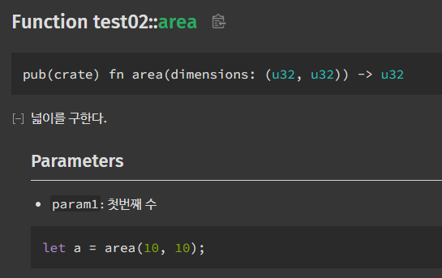
#![allow(unused)] fn main() { /** * 수학기능 trait */ pub trait Math { /// 더하기 함수 /// /// # Parameters /// * `d1`: 첫번째 수 /// * `d2`: 두번째 수 /// /// # Return /// 두 수를 더한 값을 리턴한다. fn add(d1: i32, d2: i32) -> i32; } }
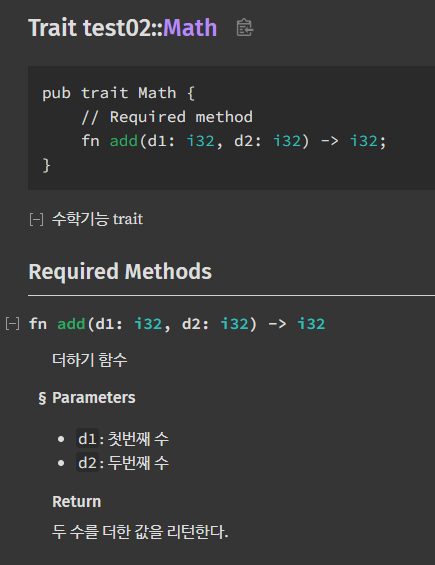
와 같이 나온다.
PS E:\test\rust\test02> cargo doc --open
Documenting test02 v1.0.0 (E:\test\rust\test02)
Finished `dev` profile [unoptimized + debuginfo] target(s) in 0.91s
Opening E:\test\rust\test02\target\doc\test02\index.html
위와 같이 cargo doc --open으로 문서를 만들 수 있다.
visual studio code에서 rust traits 한 번에 만들기 단축키: ctrl + .
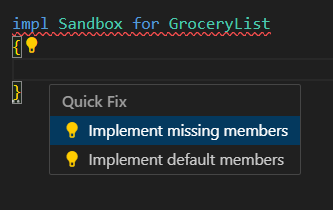
brace 안에서 ctrl + . 을 하면 이렇게 나오는데 “implement missing members” 를 선택하면,
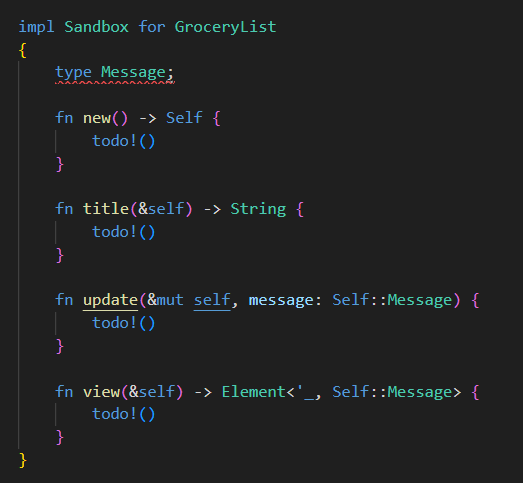
이렇게 나온다. 와..
rust 1.79 + iced 0.12.1 한글 나오게 하기
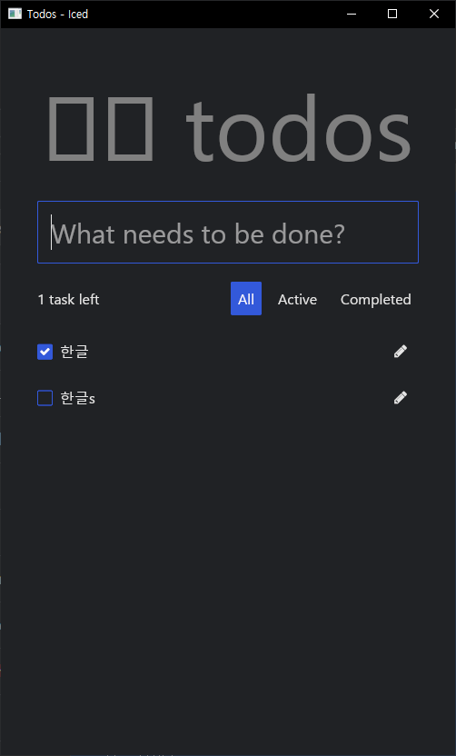
코드에
#![allow(unused)] fn main() { let title = text("한글 todos") }
라고 하면 맨 위에 처럼 한글이 제대로 나오지 않는다.
그 아래 What needs to be done? 라고 된 부분에 한글이 아무리 해도 입력조차 안되는데, 그러니까 한영키를 눌러도 그냥 영문으로만 입력이 되는데 다른 데서 한글을 쓰고 복사해서 붙여 넣으면 데이터가 추가되어 저렇게 한글로 제대로 보여진다. 모냐 이거. 하.
일단 한글이 나오긴 한다. 2024. 6. 29. 12:45
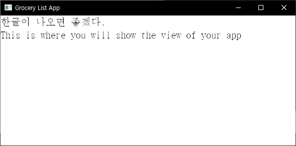
impl Sandbox for GroceryList 안에서
#![allow(unused)] fn main() { fn view(&self) -> Element<Self::Message> { text("한글이 나오면 좋겠다.\nThis is where you will show the view of your app") .size(20) .font(Font::MONOSPACE) .into() }
이제 custom font malgun.ttf를 쓰는 방법을 알아보자.
맑은고딕 잘된다. 맑은고딕은 windows 기본 글꼴.
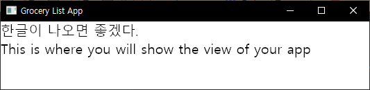
#![allow(unused)] fn main() { fn view(&self) -> Element<Self::Message> { text("한글이 나오면 좋겠다.\nThis is where you will show the view of your app") .size(20) //.font(Font::MONOSPACE) //.font(Font::with_name("../fonts/malgun.ttf")) // 이건 안 됨. .font(Font::with_name("맑은 고딕")) //.font(Font::with_name("나눔고딕")) //.font(Font::with_name("휴먼편지체")) //.font(Font::with_name("Sandoll 미생")) .into() } }
나눔고딕. 글꼴은 미리 설치되어 있어야 한다.
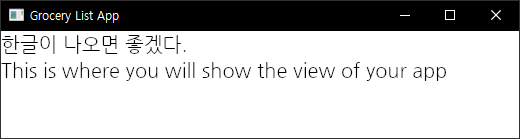
#![allow(unused)] fn main() { fn view(&self) -> Element<Self::Message> { text("한글이 나오면 좋겠다.\nThis is where you will show the view of your app") .size(20) //.font(Font::MONOSPACE) //.font(Font::with_name("../fonts/malgun.ttf")) // 이건 안 됨. //.font(Font::with_name("맑은 고딕")) .font(Font::with_name("나눔고딕")) //.font(Font::with_name("휴먼편지체")) //.font(Font::with_name("Sandoll 미생")) .into() } }
나눔고딕도 잘 된다. 맑은 고딕이랑 비슷한데 맑은 고딕이 좀 더 세로로 길다.
산돌미생체
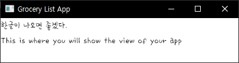
휴먼편지체
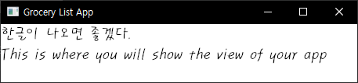
main.rs 전문 use iced::{Element, Sandbox, Settings}; use iced::{Font}; use iced::widget::text; struct GroceryList {} #[derive(Debug, Clone)] enum Message {} impl Sandbox for GroceryList { type Message = Message; /* Initialize your app */ fn new() -> GroceryList { Self {} } /** * The title of the window. It will show up on the top of your application window. */ fn title(&self) -> String { String::from("Grocery List App") } fn update(&mut self, message: Self::Message) { // Update the state of your app } fn view(&self) -> Element<Self::Message> { text("한글이 나오면 좋겠다.\nThis is where you will show the view of your app") .size(20) //.font(Font::MONOSPACE) //.font(Font::with_name("../fonts/malgun.ttf")) // 이건 안 됨. //.font(Font::with_name("맑은 고딕")) //.font(Font::with_name("나눔고딕")) .font(Font::with_name("휴먼편지체")) //.font(Font::with_name("Sandoll 미생")) .into() } } fn main() -> iced::Result { GroceryList::run(Settings::default()) https://www.youtube.com/watch?v=epsLvcdXMr8&list=PLZWdwSd12Q74o3ne0nUztVeUr9JDJIbSL&index=6&pp=iAQB}
아까 안되었던 todos example도 이 방법으로 하니까 잘 됨.
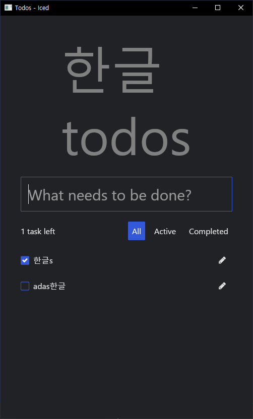
#![allow(unused)] fn main() { fn view(&self) -> Element<Message> { match self { Todos::Loading => loading_message(), Todos::Loaded(State { input_value, filter, tasks, .. }) => { let title = text("한글 todos") .width(Length::Fill) .size(100) .font(Font::with_name("맑은 고딕")) .color([0.5, 0.5, 0.5]) .horizontal_alignment(alignment::Horizontal::Center); }
todos example에서도
#![allow(unused)] fn main() { let input = text_input("What needs to be done?", input_value) .id(INPUT_ID.clone()) .on_input(Message::InputChanged) .on_submit(Message::CreateTask) .padding(15) .font(Font::with_name("맑은 고딕")) .size(30); }
이렇게 해도 저 “What needs to be done? 이라고 쓰인 입력창에 한글을 입력할 수가 없다. 한영 키를 눌러도 아무런 변화가 없다. 이건 자체적인 한글 입력 기능이 없는 듯하다.
이제 ttf 폰트를 읽어와서 쓰는 방법도 찾아봐야겠네.
rust에서 ffmpeg 개발하기
ffmpeg 개발할 때 몇몇 환경설정을 해야 한다.
- ffmpeg 설치.
- ffmpeg 개발환경 라이브러리 설치
- LLVM 설치
ffmpeg 설치
rust의 ffmpeg-next crate는 ffmpeg를 이용한다. ffmpeg는 기본적으로 설치 프로그램을 제공하지 않는다.
https://ffmpeg.org/download.html 에서
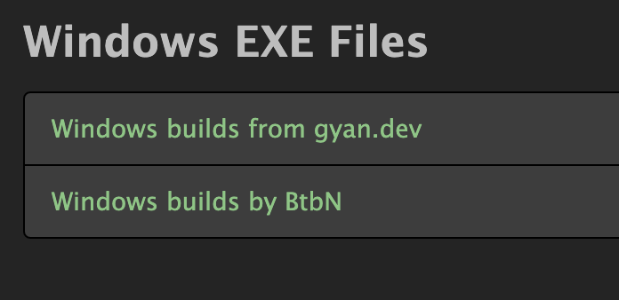
여기에서 둘 중 아무데나 들어가자. ffmpeg대신 빌드한 릴리즈를 공유하는 곳이다. 여기서 빌드된 바이너리를 받으면 된다.
압축을 풀고, 윈도우 환경설정의 path에 ffmpeg.exe 파일이 있는 폴더를 걸어준다.
ffmpeg 개발환경 라이브러리 설치
ffmpeg-next crater는 ffmpeg 개발 라이브러리를 이용한다. 그래서 개발 라이브러리도 설치해야 한다.
vcpkg를 이용했다.
vcpkg install ffmpeg
환경설정
시스템 환경 변수에
- path에 vcpkg의 packages\ffmpeg_x64-windows\bin 추가
LLVM 설치
cargo build하면 clang 설정이 안되었다고 에러가 난다. 이 문제는 LLVM을 설치해서 해결한다.
vcpkg install llvm
ffmpeg는 LLVM을 이용해 빌드되기 때문이라 한다.
build 하는데 시간이 굉장히 오래 걸린다. 그래서인지 LLVM은 pre-compiled 를 제공한다.지금 거의 3시간동안 빌드하고 있는 거 같다.
환경설정
시스템 환경 변수에
- LIBCLANG_PATH: vcpkg의 packages\llvm_x64-windows\tools\llvm
- path에 vcpkg의 packages\llvm_x64-windows\tools\llvm 추가
winui3
auto 를 반환하는 함수를 정의하기 전에 사용할 수 없다는 에러메시지가 나올 때
해당 클래스를 include 하지 않으면 auto 어쩌고 하는 에러가 나온다.
하. 그냥 모르는 클래스라고 해.
auto의 폐해.
winui 3 패키징하지 않고 탐색기에서 exe 파일 실행하기
이거 보고 함.
https://learn.microsoft.com/en-us/windows/apps/winui/winui3/create-your-first-winui3-app
- 프로젝트를 만든다.
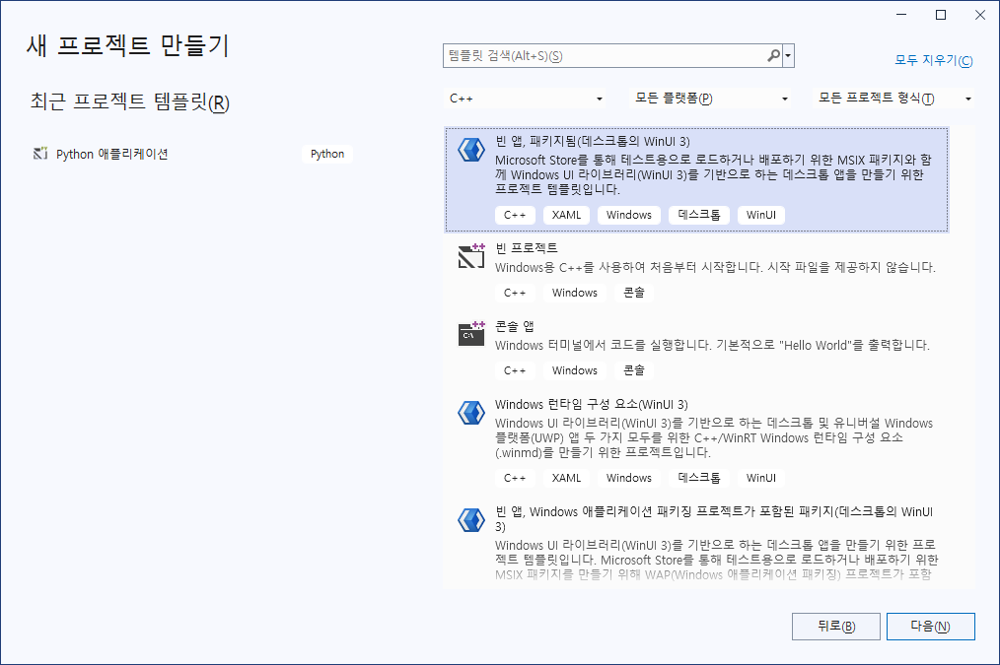
이걸로 프로젝트 만들었음.
-
vcxproj 파일을 수정한다.
<PropertyGroup Label="Globals">안에<WindowsPackageType>None</WindowsPackageType>을 추가한다. -
vcxproj 파일을 수정한다.
<PropertyGroup Label="Globals">안에<AppxPackage>true</AppxPackage>를<AppxPackage>false</AppxPackage>로 수정한다.
위 2, 3 번을 하고 나면 아래와 같다.
<PropertyGroup Label="Globals">
<CppWinRTOptimized>true</CppWinRTOptimized>
<CppWinRTRootNamespaceAutoMerge>true</CppWinRTRootNamespaceAutoMerge>
<MinimalCoreWin>true</MinimalCoreWin>
<ProjectGuid>{1c4a0c28-b802-46ee-83ee-a35facb2c5d7}</ProjectGuid>
<ProjectName>winuitest</ProjectName>
<RootNamespace>winuitest</RootNamespace>
<!--
$(TargetName) should be same as $(RootNamespace) so that the produced binaries (.exe/.pri/etc.)
have a name that matches the .winmd
-->
<TargetName>$(RootNamespace)</TargetName>
<DefaultLanguage>ko-KR</DefaultLanguage>
<MinimumVisualStudioVersion>16.0</MinimumVisualStudioVersion>
<AppContainerApplication>false</AppContainerApplication>
<AppxPackage>false</AppxPackage>
<ApplicationType>Windows Store</ApplicationType>
<ApplicationTypeRevision>10.0</ApplicationTypeRevision>
<WindowsTargetPlatformVersion>10.0</WindowsTargetPlatformVersion>
<WindowsTargetPlatformMinVersion>10.0.17763.0</WindowsTargetPlatformMinVersion>
<UseWinUI>true</UseWinUI>
<EnableMsixTooling>true</EnableMsixTooling>
<WindowsPackageType>None</WindowsPackageType>
</PropertyGroup>
- visual studio로 돌아오면
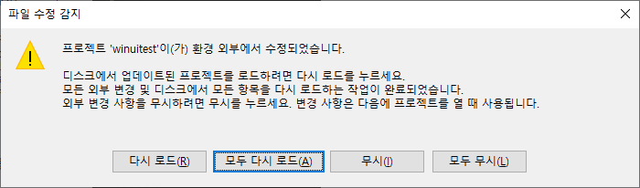
이런 메시지가 나오는데 당연히 [모두 다시 로드]를 클릭한다.
- build 하면
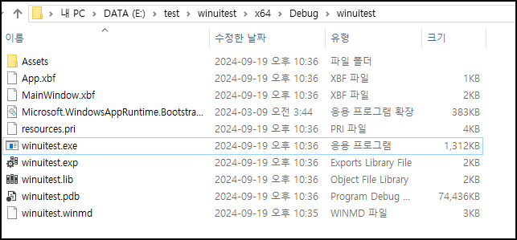
E:\test\winuitest\x64\Debug\winuitest 안에 exe 파일이 생성된다.
실행하면
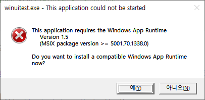
이런 메시지가 나온다. Windows App Runtime을 설치하라는 것.
[예]를 누르면
https://learn.microsoft.com/ko-kr/windows/apps/windows-app-sdk/downloads
창이 열린다.
여기서
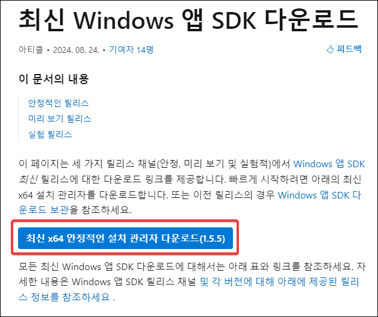
저 다운로드 버튼을 눌러 실행하면 msix 패키징없이 탐색기에서 exe 파일을 더블클릭해 실행할 수 있게 된다.
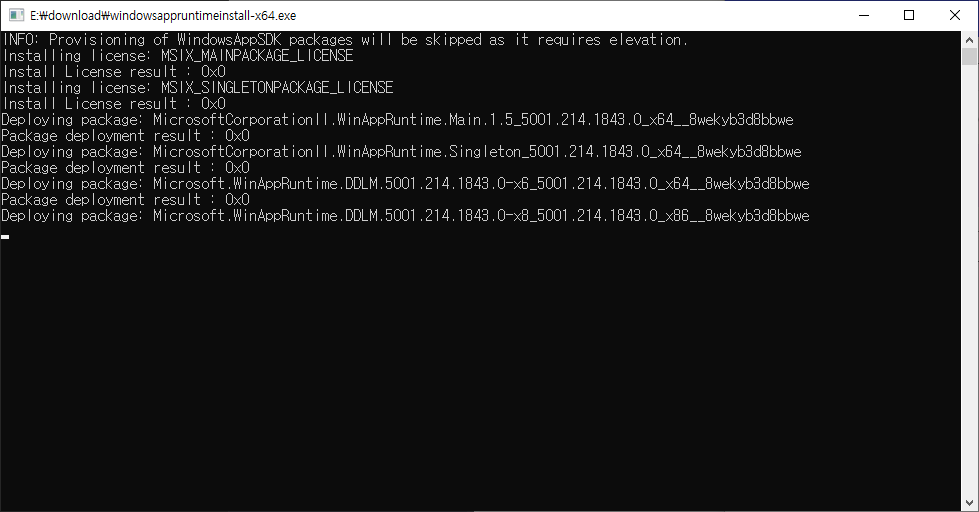
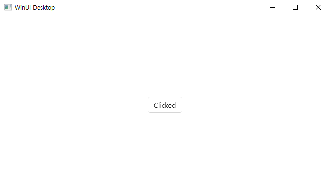
탐색기에서 더블클릭해 실행된 winui 3 앱.
개발자 pc 가 아닌 다른 곳에서는 실행이 안될 수도 있는데 그때는 vcredist.exe 를 다운로드받아 실행하면 된다.
게임
O3DE
Open 3D Engine
O3DE 설치하기
다운로드
url: https://o3de.org/download/
최소 요구사항
O3DE requires Windows 10 64-bit (versions 1809, 10.0.17763 or later)
- 2.5 GHz Intel or AMD processor with 4 or more physical cores
- 8 GB RAM
- DirectX 12, Vulkan-compatible, or Metal-compatible video card with 2 GB VRAM minimum
- NVIDIA GeForce GTX 1060 with driver version 471.11 or later
- AMD Radeon Pro 560 or higher with latest drivers
- Intel HD 630 or higher with latest drivers
- Shader Model 6.2 (or Shader Model 6.3 to use raytracing features)
- 4 GB VRAM recommended
- 40 to 100 GB of free disk space
- 1366 x 768 px screen resolution
- (Recommended) Microsoft Visual Studio 2019 or 2022.
- Visual Studio C++ Redistributable
- CMake 3.22.0 or later
나의 설치 경험
https://github.com/o3de/o3de/issues/18376
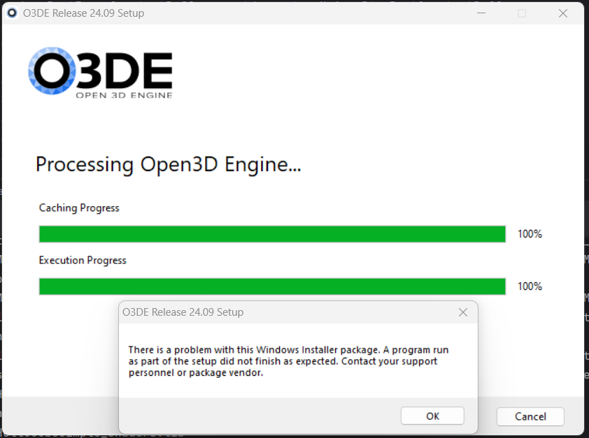
나도 정확히 위 URL의 글과 같은 현상이 나타났다.
내가 했던 일
-
Offline 버전이 아닌 웹에서 다운로드 받는 인스톨러를 다운로드 받아 설치

저 에러 나타남.
-
위 이미지의 아래에 있는 offline 버전 다운로드받아 설치 여전히 저 에러 나타남.
-
보니까 맨 마지막의 CMake가 설치되어 있기는 한데 버전이 3.22보다 한참 낮음(정확히는 기억 안남)
-
만약 CMake가 없다면 이렇게 보일 것.
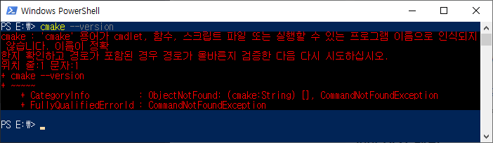
-
문제 해결
-
CMake 최신 버전으로 offline 버전 재설치
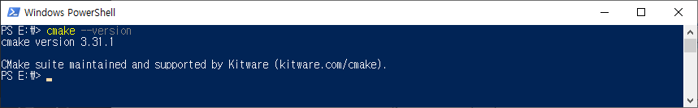
여전히 저 에러 나타남
-
관리자 권한으로 offline 버전 재설치.
문제 해결
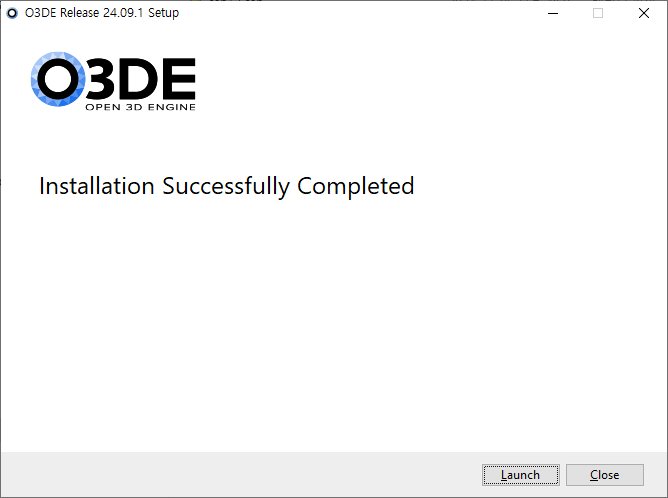
다른 컴퓨터에서
GONG 컴퓨터에서는 설치할 때 offline 버전 설치했지만 관리자 권한으로 설치하지 않았는데 한방에 잘 설치됨. 헐.
git
window 11 arm64에서 git auth 창이 투명하게 보인다.
가운데 있는 투명한 네모가 git auth창인데, 투명하게만 보이고 안에 내용이 보이질 않는다.
이 상태인데도 투명한 부분 중 버튼 부분을 클릭하면 실제 그 버튼을 누른 것처럼 동작한다. 하하.
https://github.com/git-ecosystem/git-credential-manager/issues/1539
나랑 같은 걸 말한 사람이 있다.
git config --global credential.guiSoftwareRendering true
이렇게 하면 된단다. 소프트웨어적으로 렌더링하라는 뜻인듯. 해 보니 정말 된다. 와.
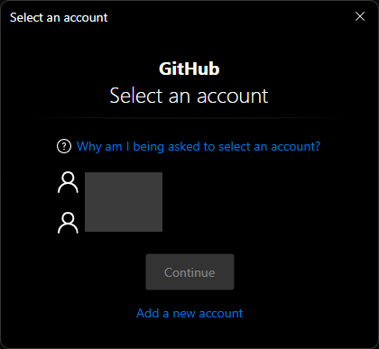
github private repository에 git bash에서 접속하기
git bash에서는 github와 통신할 일이 있을 때 로그인이 필요하면 자동으로 로그인 화면을 띄여준다 함.
그런데 나는 그런 화면이 나오질 않음.
$ git pull
remote: Repository not found.
fatal: repository 'https://github.com/userID/project.git/' not found
이런 식이다.
그래서 아래와 같이 해 보았다.
제어판 > 사용자 계정 > 자격 증명 관리자 > Windows 자격 증명 > 일반 자격 증명 에서 github가 들어간 모든 아이템 삭제
그랬더니 로그인 창이 나왔다.

browser를 이용한 로그인을 했다.
아.. 그런데 select user인가 하는 창이 아니라 로그인을 하라는 창이 나온다. 이건 또 내가 원하는 건 아닌데.. 나는 아이디 목록이 쭉 나오고 그 중 하나를 선택하는 걸 하고 싶다. 암튼.
그랬더니 다시
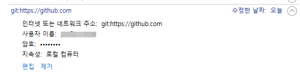
이렇게 일반 자격 증명에 하나가 추가되었다.
그리고 git pull을 해 보았더니
$ git pull origin
fatal: unable to connect to cache daemon: Unknown error
Already up to date.
이렇게 fatal error가 나왔다.
이건 아무래도
git config --global credential.helper cache
로 설정해 놔서 생긴 문제인거 같았다. 그래서
git config --global credential.helper store
로 해주었다. 그랬더니
$ git pull
Already up to date.
이 에러는 없어졌다.
다른 아이디에서 clone한 곳에 가서 git pull을 해 보았다. 그랬더니

이 창이 또 나온다.
아까 아이디로 github 로그인하고 열어놨던 브라우저를 닫고 방금 전 git pull을 한 아이디로 새로 브라우저를 열고 로그인했다.
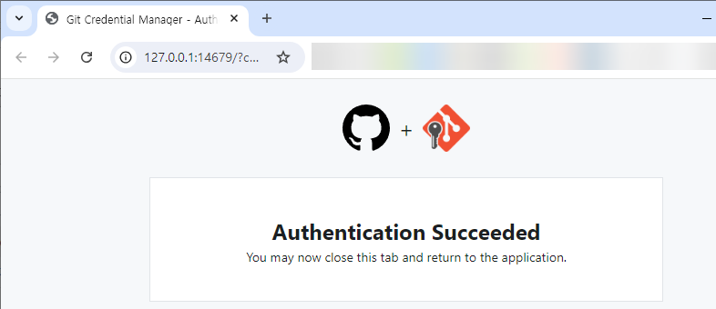
이렇게 로그인에 또 성공했다.
그리고 다시 windows 자격 증명을 확인해 봤더니
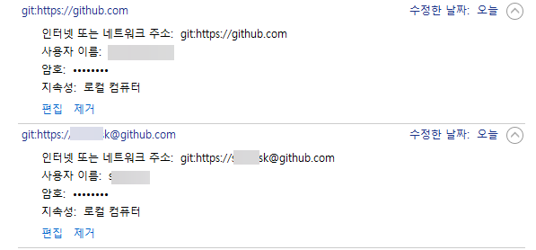
이렇게 하나가 추가되었다. 위 그림에서 밑에가 새로 추가된 거다.
좀전에 추가될 때는 아이디가 따로 나오지 않았는데 방금 전 추가될 때는 id@github.com 식으로 추가되었다.
이 상태에서 다시 아까 아이디로 clone 한 local directory로 가서 git pull 해 보았다.

헐 드디어 내가 원하던 select an account가 나왔다.
진짜 몇달동안 고민하던 문제가 해결되었다.
그런데 이렇게 해 놓고 보니까 굳이 includeif 를 할 필요가 없는 거였네.어차피 select an account가 나와서 그 중 하나를 고를텐데…
.. 라고 쓰고 좀 사용하다 보니 이게 아니다.
$ git commit -m "update"
Author identity unknown
*** Please tell me who you are.
Run
git config --global user.email "you@example.com"
git config --global user.name "Your Name"
to set your account's default identity.
Omit --global to set the identity only in this repository.
fatal: unable to auto-detect email address (got 'eugene@DESKTOP-seersssQ.(none)')
라는 에러가 났다.
바로 includeif 해서 해결함.
– 추가 (2024. 9. 15.) –
여기부터 제어판 자격증명에서 github 관련된 자격증명을 지운 후에 github 로그인 창이 나오게 하려면
C:/Program Files/Git/etc/gitconfig 파일에서 아래와 같은 설정이 있어야 하는 거 같다.
[credential]
helper = C:/Program\\ Files\\ \\(x86\\)/Git\\ Credential\\ Manager/git-credential-manager.exe
여기까지 다 잘못되었음. 저렇게 하지 않아도 github 로그인 창이 나온다.
이렇게 자격증명이 되어야 여러 개의 아이디를 사용할 수 있나 보다.
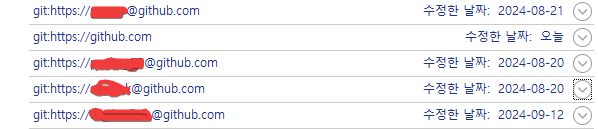
– 추가(2024. 10. 5.). 최종 해결–
제어판 자격증명에 github 관련 자격증명이
git:https://github.com
하나만 있을거다. [일반 자격 증명 추가] 버튼을 눌러 하나를 더 추가한다.
- 인터넷 또는 네트워크 주소 : git:https://ID@github.com
- 사용자 이름: 아무거나
- 암호: 아무거나
일단 저렇게 인터넷 또는 네트워크 주소 를 넣어 놓은다. ID는 저렇게 그냥 ID라고만 하면 된다.
git:https://github.com 외에 또 다른 일반 자격 증명이 있기만 하면 된다.
그리고 다시 안 되던 private repository에 가서 git pull 해 보면

이 창이 나올텐데, 이 때 [Add a new account] 를 선택해서 새로운 git ID를 추가하면 된다. 드디어 해결.
.gitconfig 파일의 내용을 전부 다 지워도 git config –list 하면 뭔가 정보가 남아있다.
git은 3가지 범위가 있다.
- local
- global
- system
우리가 .gitconfig 파일을 수정하면 이 중 global이 수정되는거다.
system의 영역에 있는 값을 수정하려면
C:\Users\eugene> git config --system --unset credential.helper
이라고 해야 한다. 그런데 저렇게 하면 아래와 같은 메시지가 나온다.
C:\Users\eugene> git config --system --unset credential.helper
error: could not lock config file C:/Program Files/Git/etc/gitconfig: Permission denied
C:/Program Files/Git/etc/gitconfig 에 global 보다 더 높은 수준인 system의 설정이 담겨 있었다. 열어 보니 내용도 많다.
[diff "astextplain"]
textconv = astextplain
[filter "lfs"]
clean = git-lfs clean -- %f
smudge = git-lfs smudge -- %f
process = git-lfs filter-process
required = true
[http]
sslBackend = openssl
sslCAInfo = C:/Program Files/Git/mingw64/etc/ssl/certs/ca-bundle.crt
[core]
autocrlf = true
fscache = true
symlinks = false
[pull]
rebase = false
[credential]
helper = manager
helper =
helper = C:/Program\\ Files\\ \\(x86\\)/Git\\ Credential\\ Manager/git-credential-manager.exe
[credential "https://dev.azure.com"]
useHttpPath = true
[init]
defaultBranch = master
여기서 보고 불필요한 내용은 다 지워주자.
나는 credential.helper은 다 지워버렸다. 이 파일을 수정하려면 관리자 권한으로 열어야 한다.
git 한글 파일명이 숫자처럼 보이는 경우 해결
git config –global core.quotepath false
tag
태그 목록 보기
git tag
태그 걸기
git tag v1.0.0
태그를 포함해서 push하기
그냥 push하면 태그없이 올라간다.
모든 태그를 포함해서 올리려면
git push origin --tags
만약 특정 태그만 올리려면
git push origin v1.0.0
참조: https://minsone.github.io/git/git-addtion-and-modified-delete-tag
visual studio
컴파일 오류 목록 중 하나를 더블클릭하면 문제 세부 정보 창이 나올 때 없애는 방법
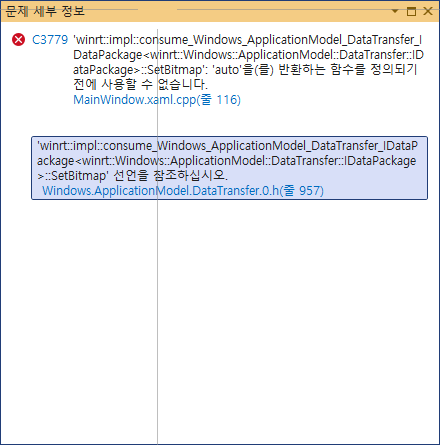
없애는 방법
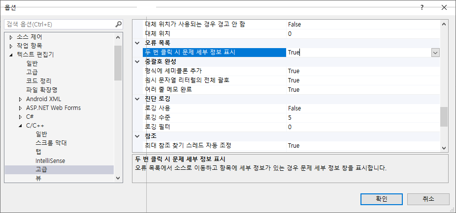
도구 > 텍스트 편집기 > C/C++ / 고급 > 오류 목록 > 두 번 클릭 시 문제 세부 정보 표시 를 “False” 로 바꾸면 없어짐.
관련 URL
https://learn.microsoft.com/ko-kr/visualstudio/ide/reference/problem-details-window?view=vs-2022
vscode
extensions
vscode에서 pdf 파일 보기 extension
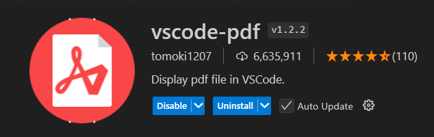
vscode-pdf 1.2.2
md파일 내 이미지 특정 폴더에 붙여넣기
extension 설치
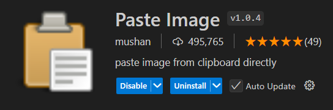
vscode용 paste image extension을 설치한다.
설정
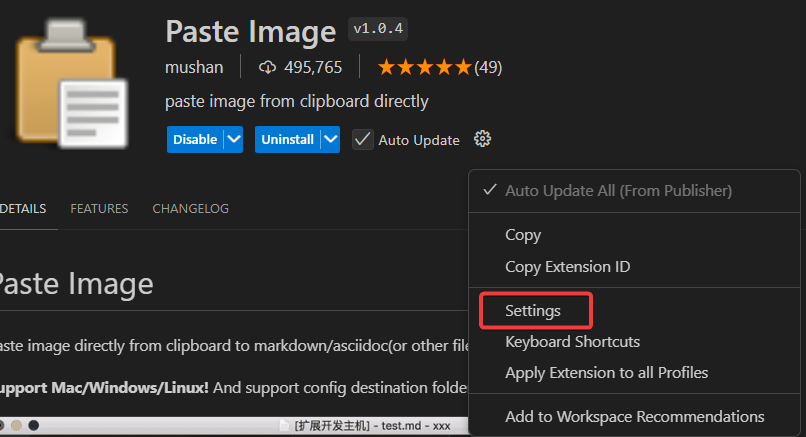
Path
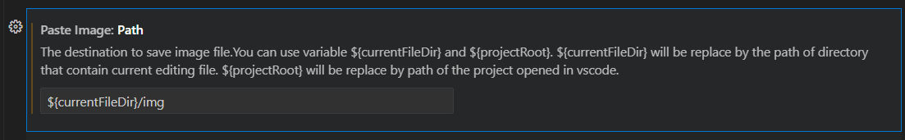
Path 설정값을 ${currentFileDir}/img 으로 수정한다.
Default Name
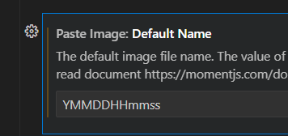
원래 값은 Y-MM-DD-HH-mm-ss 였음.
붙여넣을 파일명 정하는 창 보여주기 체크
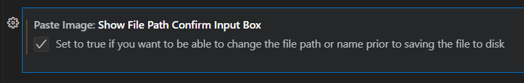
snippets
snippet 만들기
https://seukjjang.tistory.com/18
snippet을 작성하기 위해서는 ’파일 탭 -> 기본 설정 -> 사용자 코드 조각 구성’으로 이동한 뒤 원하는 언어를 선택한다.
답이 접혀 있는 문제를 내기 위한 code snippet
“make a practice”:
{
“scope”: “markdown”,
“prefix”: “112”,
“body”: [
“### $1. $2”,
“답(안) $3
”,
“”,
“$4", "$5", "”,
“
vscode 작업 영역
vscode에서 창을 나누고 했던 현재 작업 환경을 그대로 저장할 수 없나 찾아봤는데 vscode에 workspace 라는 기능이 있다. 그대로 저장할 수 있다. 넘나 훌륭한다.
visual studio code 에서 terminal에서 한글이 안될 때
그냥 vs 터미널에서
> chcp 65001
하면 바로 해결된다. 65001이 utf-8
markdown custom css
C:\Users_USERID_\AppData\Local\Programs\Microsoft VS Code\resources\app\extensions\markdown-language-features\media\markdown.css
파일을 수정하면 된다.
오늘은 아래와 같이 수정함.
h1 {
font-size: 2.3em;
margin-top: 0;
/* margin-bottom: 100px; */
padding-bottom: 0.3em;
border-bottom-width: 1px;
border-bottom-style: solid;
font-weight: bold
}
h2 {
font-size: 2em;
margin-top: 80px;
/* margin-bottom: -30px; */
padding-bottom: 0.3em;
border-bottom-width: 1px;
border-bottom-style: solid;
font-weight: bold
}
h3 {
margin-top: 60px;
/* margin-bottom: -20px; */
font-size: 1.5em;
font-weight: bold
}
h4 {
margin-top: 50px;
/* margin-bottom: -20px; */
font-size: 1.25em;
font-weight: bold
}
h5 {
margin-top: 30px;
/* margin-bottom: -10px; */
font-size: 1em;
font-weight: bold
}
h6 {
font-size: 0.85em;
}
이 파일을 수정하고 markdown 미리 보기 창을 닫고 다시 미리보기 하면 반영되어 있다.
그런데 이렇게 해도 yzane Markdown pdf 익스텐션을 이용해 pdf로 export 할 때는 이 css가 반영되지 않는다.
pdf 파일은
C:\Users\_USERID_.vscode\extensions\yzane.markdown-pdf-1.5.0\styles\markdown-pdf.css
파일을 수정하면 된다.
settings
세팅파일 만드는 데 사용되는 파일 포맷들
https://velog.io/@jk01019/TOML-VS-YAML
TOML
쓰기 쉽다. 설정파일 만들 때 가장 좋음.
YAML
구조화된 데이터 사용 가능, 조금 복잡할 수도.
JSON
가볍고 처리속도 빠르고 많이 사용. 불편.
기타
miniconda
miniconda 사용법
references
- https://docs.anaconda.com/working-with-conda/environments
- https://developer-woo.tistory.com/40
새 환경 만들기
conda create -n <ENV_NAME>
새로 만든 환경 활성화
conda activate <ENV_NAME>
파이썬 버전 변경하기
conda install python=3.10.6
유틸리티
joplin
joplin에서 mdbook으로 넘어온 이유
-
잦은 동기화 오류.
여러 기기에서 사용하다 보니 충돌 폴더가 생기고 그 안에 자꾸 내용이 쌓이고 있어 불안하다.
그리고 작성한 기억이 있는데 동기화 하다보면 사라진 거 같은 느낌이 있다. 아 이건 정확하지 않아 뭐라 하기 어렵긴 하다. -
이미지 처리의 불편함.
이미지가 하나의 폴더에 전부 다 들어간다. 나중에 이 파일 찾기도 어렵다. -
사실 아이패드나 핸드폰에서는 보기만 하지 작성은 하지 않는다. 작성할 일이 있으면 디바이스마다 죄다 다 펜을 사놨는데 그걸로 메모해 놨다가 나중에 다시 mdbook에 적어 넣으면 된다.
-
joplin은 md 표준을 지키지 않는다. 예를 들면 문장 맨 뒤에 space 2개를 넣지 않아도 자동으로 개행이 된다. 나중에 굉장히 난잡한 글을 보게 될 거 같아 걱정스럽다.
-
나는 온전한 md 파일을 내 로컬에 남기고 싶다.
-
mdbook에 대한 일종의 믿음(?)
joplin에서 mdbook으로 넘어올 때 아쉬웠던 점
- joplin은 종단간 암호화 동기화 기능을 지원한다.
- 쉬운 tags, backlinks 기능
- 다양한 플러그인들(하지만 내가 만들어 버리지 모).
podcast
역대 최고 편한 앱은 구글 팟캐스트였지만, 이제 android에서도 podcast를 비교적 쉽게 쓸 수 있게 되었음.
apple이 웹에서 팟캐스트를 지원하기 시작했기 때문.
PC 브라우저에서 너무 잘 됨. 제일 편함. playlist 버튼이 바로 보임. playlist에 (전체) 지우기 버튼이 있음. playlist 내에서 순서바꾸기는 안됨.
android에서는 좀 불편해도 여튼 쓸 수 있음.
web을 app으로 만들기
따로 설명 안함
app으로 사용할 때 문제점

소리가 나고 있는데 아무리 찾아봐도 재생 창이 안 나타난다.
재생창에 playlist 버튼이 있기 때문에 재생 창을 찾아야 한다.
app으로 사용할 때 재생 창 보는 법
화면을 가로로 회전시키면 위에 저렇게 재생 창이 나타난다.

저 빨간 부분을 터치한다.

그럼 이렇게 재생 창이 나타난다. 그런데 여기서 아무리 찾아봐도 playlist 버튼이 안나온다. playlist를 보려면 다시 원래대로 세로로 회전시키면 된다.

** 2024. 12. 1. 추가 **
1, 2주 전부터 이제 저렇게 회전 회전 하지 않아도 그냥 재생 창이 잘 보인다. 애플이 수정한듯.
powertoys
powerRename 을 이용해 자동으로 확장자 붙이기(inkscape export 후)

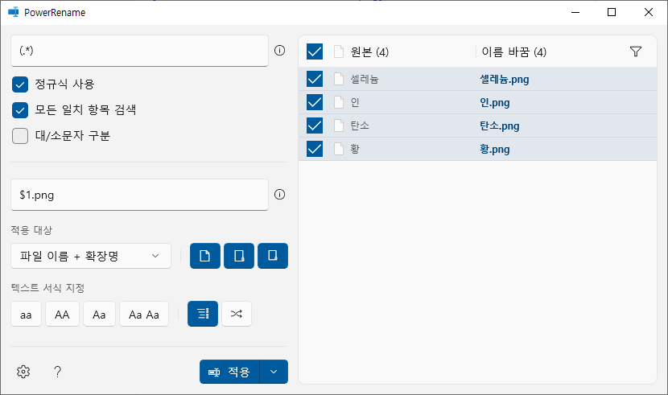
이렇게 설정하면 한 번에 자동으로 확장자를 붙여줄 수 있다.
노트
노트 혹은 메모하는 방법 정리.
노트를 위한 폴더 만드는 법
예를 들어,
- 노트
+– MDBook
+– MKDocs
+– HUGO
와 같은 식으로 메뉴를 만들고 싶다면, 폴더도 저런 식으로 만들고 싶어진다.
그런데 폴더는 저런 식으로 만들면 안 된다.
폴더 자체는,
/노트
/MDBook
/MKDocs
/HUGO
로 각각 4개를 만들고, summary.md 파일처럼 목록을 정해주는 곳에서
메뉴 구성만
- 노트
+– MDBook
+– MKDocs
+– HUGO
sub category 구조로 해줘야 한다.
대부분의 컨텐츠는 한 category에만 속하지 않고 여러 category에 걸쳐 속해 있기 때문이다. 그래서 나중에 폴더 구조를 바꿔야 할 때도 있는데 그 때 변경을 쉽게 하려면 컨텐츠 폴더는 각각 만들고 목록 정해주는 파일만 고쳐주면 되도록 준비해 놔야 한다.
지금 이미 note 밑에 MDBook 폴더를 만들어 놔서 이거 어떻게 다 고칠지 걱정이다. MDBook은 그냥 note 폴더에 놔둘까…
mdbook
기본 사용법
- 공식: https://rust-lang.github.io/mdBook/guide/installation.html
- 블로그: https://piatoss3612.tistory.com/105
프로젝트 생성
mdbook init <프로젝트명>
프로젝트 실시간 보기
cd <프로젝트명>
mdbook serve --open
프로젝트 build
mdbook build
기본적으로 <프로젝트명>/build 디렉토리에 결과물이 저장된다.
그래서 mdbook init을 통해 자체 생산되는(optional) .gitignore 파일을 보면 book 디렉토리가 git ignore 되도록 하고 있다.
mdbook update
cargo install mdbook
...
Replaced package `mdbook v0.4.40` with `mdbook v0.4.43` (executable `mdbook.exe`)
extensions
mdbook-backlinks
https://crates.io/crates/mdbook-backlinks/0.2.7
backlink를 걸어줌.
mkdocs
nav에서 섹션을 클릭했을 때도 문서가 열리도록
theme features에 navigation.indexes하면 된다.
theme 디자인 건들지 않고 수정
이거 보고 함. material theme github. https://squidfunk.github.io/mkdocs-material/customization/#additional-css
mkdocs는 theme의 css도 수정할 수 있게 했다.
style.css 파일이 theme의 css를 customizing 하고 있다.
mkdocs.yml 파일
theme:
name: material
extra_css:
- style.css
이렇게 수정하고, docs 폴더에 style.css 파일을 두면 된다.
style.css 파일
@font-face {
font-family: 'Nanum Gothic';
font-style: normal;
font-weight: 400;
src: url(./fonts/NanumGothic/NanumGothic-Regular.eot);
src: url(./fonts/NanumGothic/NanumGothic-Regular.eot?#iefix) format('embedded-opentype'),
url(./fonts/NanumGothic/NanumGothic-Regular.woff2) format('woff2'),
url(./fonts/NanumGothic/NanumGothic-Regular.woff) format('woff'),
url(./fonts/NanumGothic/NanumGothic-Regular.ttf) format('truetype');
}
@font-face {
font-family: 'Nanum Gothic Bold';
font-style: normal;
font-weight: 700;
src: url(./fonts/NanumGothic/NanumGothic-Bold.eot);
src: url(./fonts/NanumGothic/NanumGothic-Bold.eot?#iefix) format('embedded-opentype'),
url(./fonts/NanumGothic/NanumGothic-Bold.woff2) format('woff2'),
url(./fonts/NanumGothic/NanumGothic-Bold.woff) format('woff'),
url(./fonts/NanumGothic/NanumGothic-Bold.ttf) format('truetype');
}
@font-face {
font-family: 'Nanum Gothic exBold';
font-style: normal;
font-weight: 800;
src: url(./fonts/NanumGothic/NanumGothic-ExtraBold.eot);
src: url(./fonts/NanumGothic/NanumGothic-ExtraBold.eot?#iefix) format('embedded-opentype'),
url(./fonts/NanumGothic/NanumGothic-ExtraBold.woff2) format('woff2'),
url(./fonts/NanumGothic/NanumGothic-ExtraBold.woff) format('woff'),
url(./fonts/NanumGothic/NanumGothic-ExtraBold.ttf) format('truetype');
}
@font-face {
font-family: 'JalnanGothic';
src: url('https://cdn.jsdelivr.net/gh/projectnoonnu/noonfonts_231029@1.1/JalnanGothic.woff') format('woff');
}
h1
{
font-family: 'Nanum Gothic exBold';
/*font-size: large;*/
/*color: red;*/
font-weight:bolder;
}
h2
{
font-family: 'Nanum Gothic exBold';
/*color: red;*/
font-weight:bolder;
}
h3
{
font-family: 'Nanum Gothic exBold';
/*color: green;*/
font-weight: bolder;
}
p
{
font-family: 'Nanum Gothic', sans-serif;
font-weight:400;
}
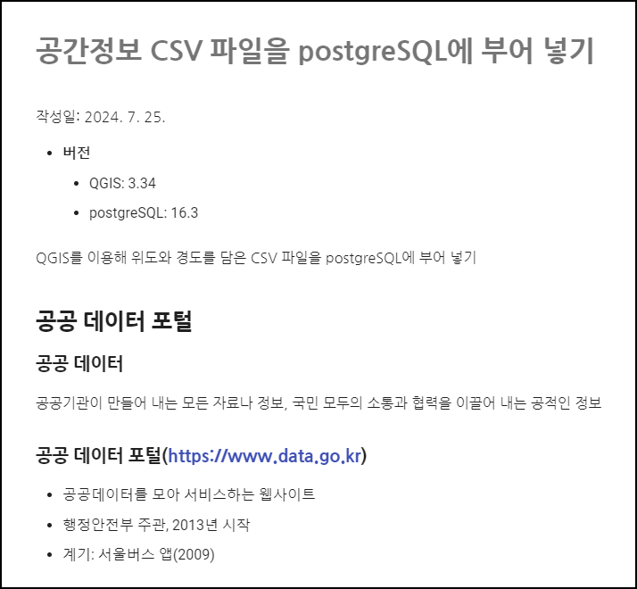
h1은 아마도 색을 미리 정해 놓았나보다. 맨 위가 h1인데 css로는 글자색을 바꿀 수 없음. 폰트만 바꿀 수 있다. h2, h3를 전부 나눔고딕 extra bold로 해 놓았는데 잘 되고 있다.
hugo
- theme가 없으면 not found page 에러가 난다.
mindmap
markdown 파일을 mm(freemind, freeplane) 으로 바꾸기
https://github.com/unhurried/md-to-mm
여기서 markdown 파일을 freemind나 freeplane에서 사용하는 mm파일로 바꿀 수 있다.
freeplane이 freemind를 fork한 거다.
마케팅
팔지마라. 해결해줘라
https://www.linkedin.com/feed/update/urn:li:activity:7264963259730976768
팔지 말고 그들의 문제점을 해결해 줘라.
콘텐츠
저작권
유튜브 링크를 걸면 저작권 위반인지에 대한 대법원 판결
유튜브 등 링크를 무단으로 걸면 저작권 등 침해일까?
https://www.youtube.com/watch?v=lqaJvTl5oZA
대법원 2015. 3. 12. 판결에서 경로를 나타낸 것에 불과하여 저작권 침해가 아니라고 판결.
유튜브
유튜브에서 광고 허용 요청
brave browser 쓰는 데 2024. 12. 21.에 이 메시지 처음 보여줌.
자격증
버스(1종 대형 면허)
1종 대형 면허증을 따는 방법에 대해 많은 글들이 있지만 아래 몇 개만 제대로 보면 된다.
1. 전체 진행 파악
2. 코스 및 점수 내역 파악
내가 응시할 면허 시험장의 코스가 있는지 찾아보는 것도 필요함.
3. 인천면허 시험장 실제 시험 영상보고 실제 시험 감각 잡기
이 영상까지 보면 아 시험을 이렇게 보는구나 싶은데 각 코스마다 실제로 어떻게 해야 통과하는지는 알 수 없다. 버스 운전은 자가용 자동차 운전과는 좀 다르니까. 아래 4번의 글을 보고 일종의 공식같은 걸 외우면 된다. 이런 공식이 왜 필요해라고 생각할 수 있는데, 공식이라기 보다는 거의 유일한 방법이라 생각하자.
4. 1종 대형 코스별 통과 요령 숙지
https://m.blog.naver.com/jakejeong/221551323349
원본은 어디에 있는지 모르겠음. 암튼 위 사이트에서 “1종대형 코스별 통과요령(1).pdf” 와 같은 pdf 파일 5개를 다운로드받아 보면 시험 과정을 모두 확인할 수 있다.
5. 인천면허 시험장 실제 시험 영상보고 실제 시험 해 보기
영상을 틀어놓고 4의 1종 대형 코스별 통과 요령 pdf 파일을 보면서 각 코스를 같이 진행한다.
전북면허시험장
코스의 노란선은 잘 보인다.
클러치를 완전히 다 올려야 차가 움직인다. 그래서 반클러치가 없다.
오늘 떨어진 이유도 이 때문.
처음 시작하자마자 20초 동안 차를 움직이지 못해 벌점 5점 먹었다. 기어를 몇 번이나 다시 넣고 엄청 놀람.
경사로에서 힘들 거 같다.
버스 조작
- 반 클러치 안 됨. 앞으로 가려면 발에서 클러치를 완전히 떼야 함.
- 기어
- R 놓을 때 레버 위로 올리는 거 없음. 그냥 R로 가면 됨.
- 비상등: 오른쪽 레버 위로 올리면 켜지고, 내리면 꺼진다.
좋은 점
처음 시작할 때 코스를 한 번에 해버려서 시간을 더 절약할 수 있고, S코스를 오른쪽에 바로 붙여서 들어갈 수 있어 통과할 확률이 훨씬 높아졌다.
나쁜 점
그지같은 버스. 반클러치를 할 수가 없다.
떨어진 이유
- 여기 버스는 반클러치를 할 수가 없다. 클러치에서 발을 떼야 차가 앞으로 간다. 반클러치 성공 못함. 이러다 20초 내에 출발 못해서 5점 깎이면서 엄청 당황함.
- 굴절에서 떨어짐. 바퀴를 11자로 놓아야 할 때 핸들을 완전히 오른쪽으로 돌려버려 차가 완전히 이상하게 가버렸다.
반성, 할 일, 기대
- 여태까지는 경험이었지만 이제부터는 실전이다. 준비 제대로 해서 가자.
- 마인드 트레이닝 확실히 해가자. 굴절에서 후진 시 핸들을 완전히 오른쪽으로 돌려버릴 줄이야.
- 기어 외워 가자.
- 다음은 꼭 코스 통과까지 가자.
취미
그림그리기
클립스튜디오 1 ex 마스크 사용법
https://youtu.be/uQFVh0jNMiE
그림그리기
시계만들기
초침규격
다양한 초침 파는 곳: https://www.coupang.com/vp/products/7616826975?itemId=20184919564
내가 주로 쓰는 스즈끼 규격
https://www.coupang.com/vp/products/6750290910?itemId=15785648375
- 시 바늘: 5.2mm
- 분 바늘: 3.4mm
8inch x 8inch 액자 안에 넣는 경우
중점에서 최대 가로폭까지 거리가 90mm(최대 95mm까지는 될 듯)
4inch x 4inch 액자 안에 넣는 경우
https://www.coupang.com/vp/products/6266572371?itemId=12791318654
중점에서 최대 가로폭까지 거리가 45mm
피아노
프로그램 설치
-
무료 analog lab 프로그램 설치:
- https://www.arturia.com/products/software-instruments/analoglab/free
- 하지만 이 프로그램은 아래 설치할 ASC에서 설치하도록 하자.
-
ASC(Arturia Software Center) 설치:
- https://www.arturia.com/fr/support/downloads-manuals
- 그리고 이 안에서 MIDI Control Center를 설치하면 드라이버가 설치되고 펌웨어 버전과 업데이트도 자동으로 할 수 있다.
관련 Youtube Video
https://www.youtube.com/watch?v=490krwG0qDk
firmware upgrade
ASC(Arturia Software Center)를 설치한 다음, MIDI Control Center를 설치하면 현재 펌웨어 버전을 보여준다.
이 프로그램에서 최신 버전을 자동으로 다운로드받아 설치할 수 있다.

펌웨어 버전을 누르면 창이 나오는데 가운데에 지금은 최신 버전으로 펌웨어 업그레이드 되어 안 보이는 버튼이 하나 나타나는데, “Download latest” 버튼이다. 그걸 누르면 자동으로 펌웨어를 다운로드받고 설치한다.
가만 놔두면 불빛이 번쩍번쩍거린다.
MIDI Control Center에서 Device Settings로 들어가 Vegas Mode를 “disable” 로 바꾼다.
관련 글: https://legacy-forum.arturia.com/index.php?topic=95080.0
매뉴얼
keylab-essential_Manual_1_0_0_EN.pdf
다운로드 URL: https://downloads.arturia.com/products/keylab-essential-49/manual/keylab-essential_Manual_1_0_0_EN.pdf
아이패드와 연결
keylab 61과 아이패드를 연결하는 방법을 찾아보니 3가지 방법이 나옴.
1. OTG 케이블
https://www.coupang.com/vp/products/7685325978?itemId=20536740130
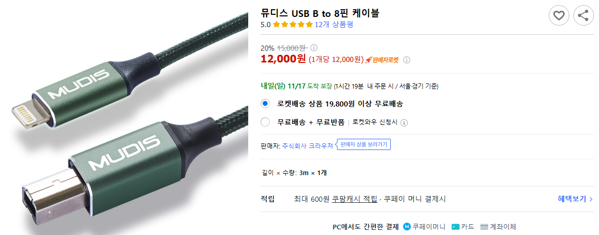
이걸 쓰면 직접 연결할 수 있을 거 같다.
3미터면 너무 긴데.. 하면서 다른 걸 찾아봄. (짧은 걸 못 잦음)
2 OTG 변환잭
https://www.coupang.com/vp/products/7345042735?itemId=18887847704
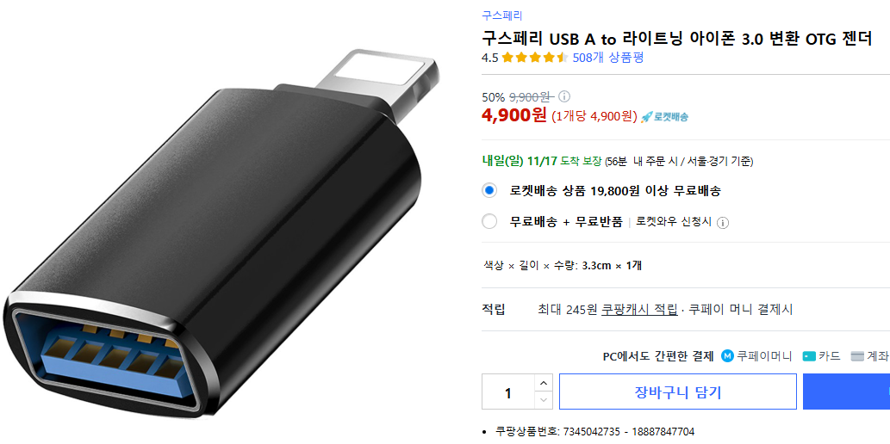
음.. 웬지 믿음이 안 감.
3. 미디 연결 케이블
https://www.coupang.com/vp/products/5320283335?itemId=7736124268
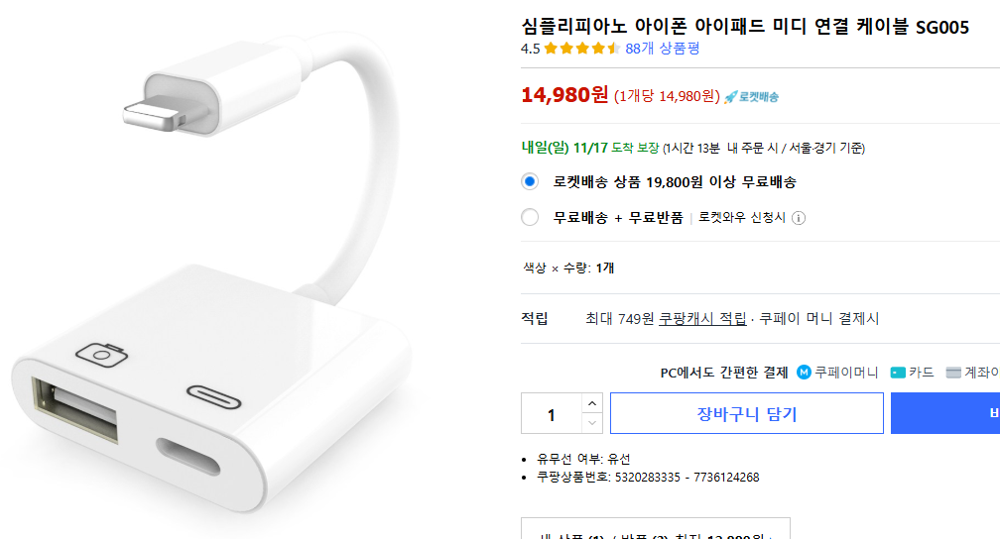
이 제품으로 구입했음.
이렇게 되면 keylab 61의 usb 포트에서 PC가 아닌 이 장비로 연결해야 하기 때문에 전원 공급을 신경써야 함. 이 장비에 충전 포트가 있는데 전원이 아이패드로만 갈지 아니면 keylab 61로도 전달될지 궁금. 만약 keylab 61로 전원 공급이 안되면 별도의 아답터(전원 공급) 를 써야 함.
2024. 11. 18.(월)
택배 도착함.
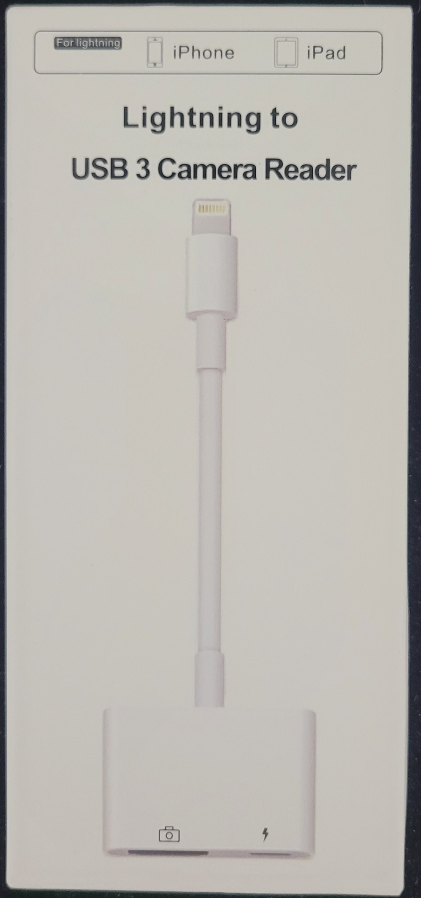
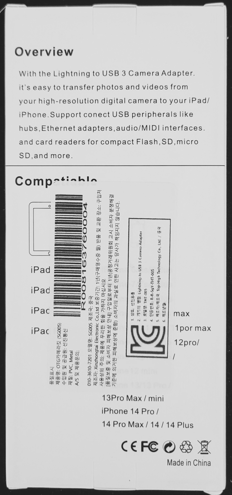
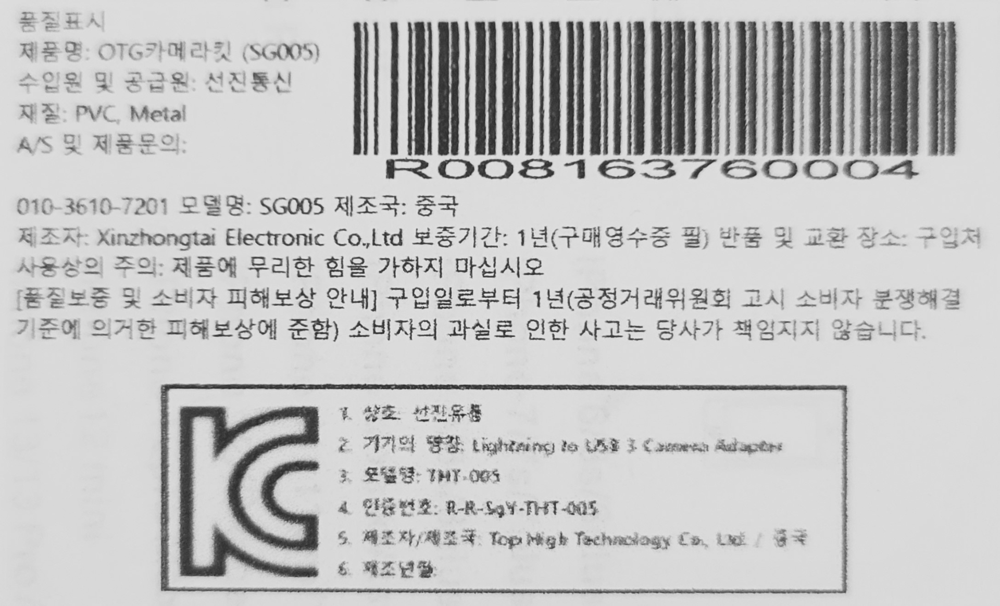
저 사진과 다른 게 옴. 약간만 다르고 기본적인 건 다 똑같다.
충전하는 포트는 8핀이다.
keylab 61 usb 포트에 꽂은 케이블을 왼쪽 usb 포트에 연결하니 바로 keylab 61에 전원이 공급된다. 아이패드의 전원을 쓰는 거다. 헐.
오른쪽 충전포트에도 8핀 꽂았더니 아이패드 바로 충전된다. 와우.
그런데 내 충전기가 약한 건지 충전 중인데도 피아노를 계속 치고 있으면 아이패드 배터리 잔량이 내려가고 피아노 안 치고 그냥 그대로 놔두고 있으면 배터리 잔량이 올라간다.
잘된다. latency도 거의 느껴지지 않는다.
keylab 61 버튼 몇개가 KORG module과 연결된다.
처음엔 velocity 강약을 맞추기가 어려웠는데, KORG module의 velocity curve를 light로 고치니 손에 딱 맞는다. 기본인 velocity curve: normal인 상태일 때는 썌게 쳐야 소리가 크게 나고 약하게 치면 소리가 아예 안 났는데 light 로 고치니 어느 정도 약하게 치면 어느 정도 누른 상태로 약하게 인식하고 쎄게 치면 쎄게 인식해서 딱 좋다.
아답터 안 사도 되서 좋다.
manual
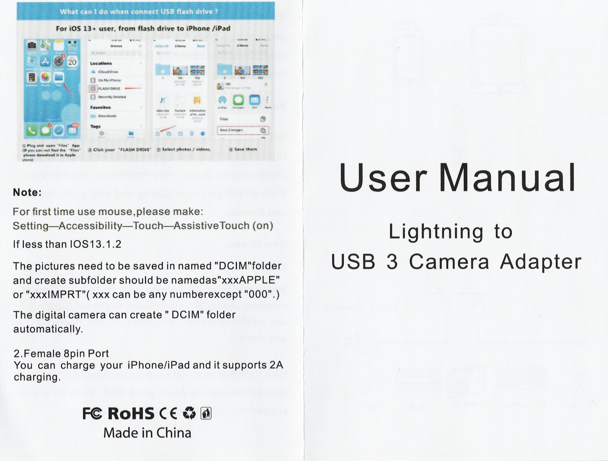
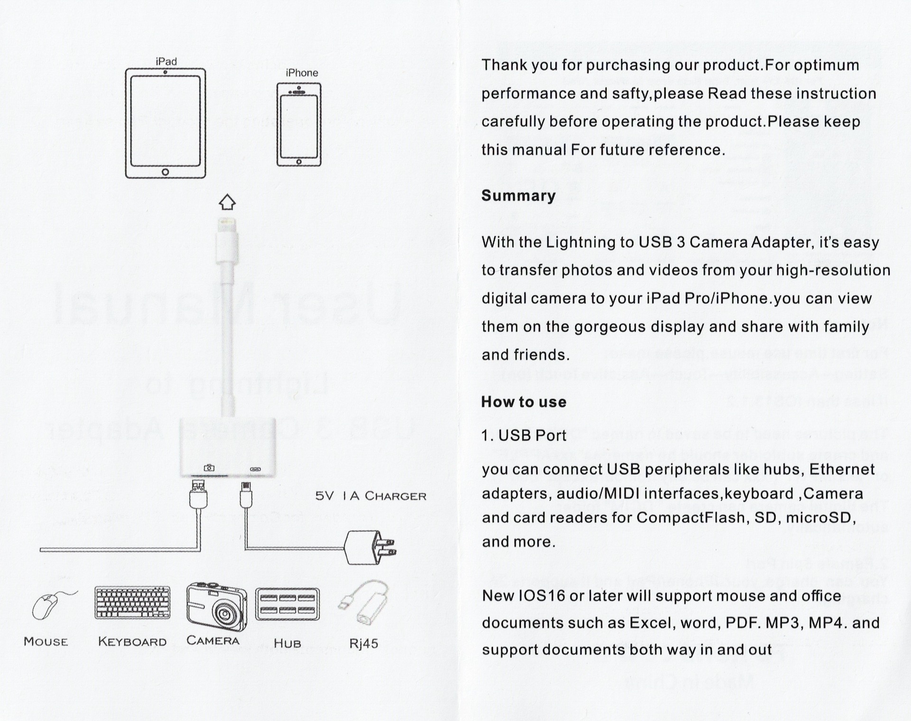
전원 공급
arturia KeyLab 61 Essential의 전원 공급 방법은 2가지임.
1. USB를 통한 전원공급
PC와 USB(B타입)로 연결하면 자동으로 전원이 공급됨.
2. DC 아답터 이용
매뉴얼에 9V 0.5A를 연결하라고 되어 있음. 안쪽이 플러스 바깥쪽이 마이너스임. 크기는 명시 안되어 있음.
매뉴얼
https://downloads.arturia.com/products/keylab-essential-49/manual/keylab-essential_Manual_1_0_0_EN.pdf
디자인
글꼴
상상토끼 글꼴
꽃길체
결제가 완료되었습니다 주문배송은 마이페이지에서 조회 가능합니다 비회원인 경우 주문번호(202412041559290)와 주문자의 연락처번호(01096745912)로 주문조회가 가능합니다. 꼭 숙지하세요
주문번호 202412041559290 결제정보 무료결제
결제금액 0원
vector graphics
.AI 파일로 저장하기
affinity
url: https://affinity.serif.com affinity Designer가 .ai로 저장할 수 있었던 거 같다.
sobi@g로 체험판을 신청해 사용해 봄. https://store.serif.com/en-us/account/downloads
직접 사용해 보니 .ai로는 export 할 수 없었음.
지금 블랙프라이데이 50% 할인 기간이지만 사용하지 않겠음.
어휘
나는 어휘력이, 문해력이 높은 편일까?
여기서 장사하면 안된다 여기서 장사하면 안 된다 의 차이
- 여기서 장사하면 안된다: 잘되다의 부정형. 여기서 장사하면 돈을 많이 못 번다는 뜻이다.
- 여기서 장사하면 안 된다: 경고의 뜻으로, 이 곳은 물건을 팔면 안 되는 곳으라는 뜻.